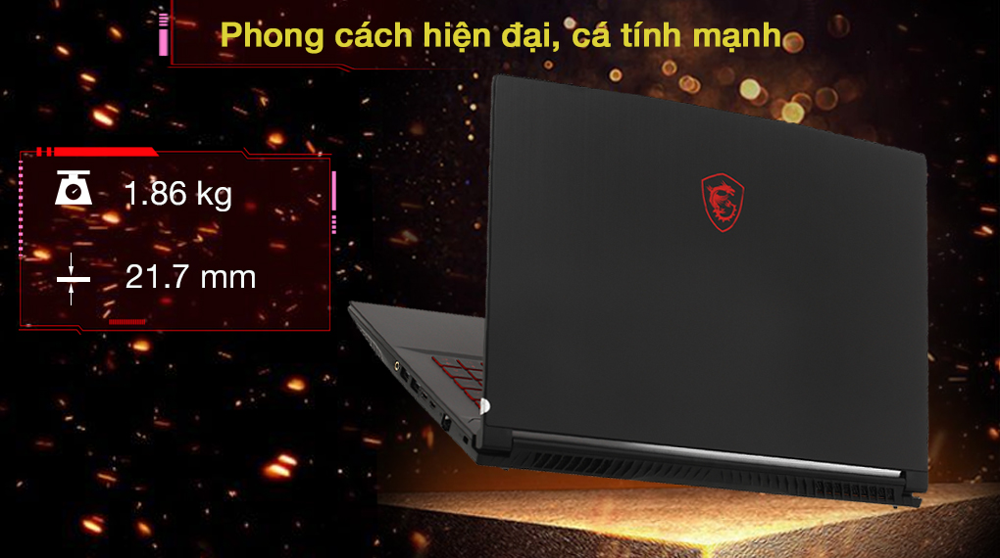

Xử lý mọi tác vụ văn phòng một cách ấn lượng hay thỏa mãn bạn với mọi tựa game kịch tính nhất hiện nay như Cyberpunk 2077, CS:GO, LOL, FIFA, PUBG: Battlegrounds,... nhờ hiệu năng vượt bật của bộ CPU Intel Core i5 10500H sở hữu cấu trúc 6 nhân 12 luồng, mang đến tốc độ xung nhịp cơ bản 2.50 GHz và đạt tối đa lên đến 4.5 GHz Turbo Boost.
Phiên bản laptop này mang đến cho người dùng trải nghiệm ấn tượng hơn nhờ khả năng đa nhiệm cực tốt đến từ bộ nhớ RAM 16 GB chuẩn DDR4 2 khe (1 khe 8 GB + 1 khe 8 GB) với tốc độ bus RAM 3200MHz, cho phép bạn mở và vận hành cùng lúc nhiều ứng dụng. Thêm vào đó, MSI còn hỗ trợ nâng cấp RAM tối đa lên đến 64 GB, tối ưu nhu cầu sử dụng.
Ổ cứng SSD 512 GB NVMe PCle với không gian lưu trữ rộng lớn cùng khả năng truy cập và phản hồi nhanh chóng tức thời. Đồng thời, bạn có thể dễ dàng tháo rời ổ cứng và thay thế bằng thanh khác tối đa 2 TB, phục vụ tối ưu cho mọi nhu cầu của bạn.
Mở rộng bộ nhớ dễ dàng hơn nhờ laptop được trang bị thêm khe cắm SSD M.2 PCle (nâng cấp tối đa 2 TB), cho bạn làm việc và giải trí thoải mái với không gian lưu trữ rộng lớn.
Mang đến cho người dùng một thiết kế đậm chất viễn tưởng với logo MSI đỏ rực nổi bật trên nền đen huyền bí của lớp vỏ nhựa phay xước bền bỉ cùng trọng lượng 1.86 kg và dày 21.7 mm, luôn trong tư thế sẵn sàng cùng bạn chiến game trên mọi mặt trận dù ở bất kỳ đâu.
Gây ấn tượng mạnh mẽ hơn khi phiên bản laptop MSI gaming này sở hữu bàn phím với hành trình phím thích hợp, độ nảy tốt được trang bị đèn nền sắc đỏ bắt mắt như tiếp thêm sức mạnh cho các game thủ, đem đến lợi thế chiến thắng trong hàng loạt trận chiến.
Đa dạng các cổng giao tiếp được trang bị ở chiếc laptop gaming này như: 2 cổng USB 3.2, 2 cổng USB Type-C, HDMI, Jack tai nghe 3.5 mm và LAN (RJ45), hỗ trợ bạn kết nối và truyền xuất dữ liệu dễ dàng hơn với nhiều loại thiết bị tương thích khác nhau.